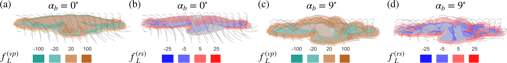

Where does a swimmer’s thrust come from? Mapping reactive and vortex-pressure forces on deforming bodies.
KING’S COLLEGE LONDON / ENGINEERING
Flow. Force.
Intelligence.
We map the forces within fluid motion.
And teach machines to predict what comes next.


SWIMMING CYCLE
Anguilliform swimming · St = 0.4 · λ* = 1.5 · Re = 5,000. Motion and force maps over one cycle.
View source ↗SELECTED WORK / 01—04
Physics meets prediction.
Vortex dynamics. Force attribution.
Scientific machine learning.
Predicting separated aerofoil flows with transformer operators guided by vortex-force physics.
One observed flow. Different prescribed futures. Neural operators conditioned on motion, inflow and forcing.
Tracing the origins of lift and drag in Reynolds-averaged flow, from aerofoils to gliding birds.
KCL FLOWLAB / LONDON, UK
Understand the flow.
Explore what’s possible.
Fluid mechanics and scientific machine learning at King’s College London. We connect computational models with the physical mechanisms behind complex flows.
Let’s talk researchDepartment of Engineering
Dr Juan Li · Research contact ↗